Order Placement
Enter a confirmed order in the Order Tracker in Dev PLM, keep its items up to date, and archive it once the order form has gone.
Draft. Saul to confirm 7 things on this page
- The real names of the 3 item statuses. The pictures show sample names. The last version of this guide listed New, Open, In Progress and Complete.
- How a new style and its UPC get onto the style list, and who does it. Exports and other tools read that list, and + Import Categories never adds styles.
- How an order is placed with the factory, and whether the factory is told before or after the order goes in the Order Tracker.
- Who gets the order form.
- What to send for an order with no M1S form: one typed by hand, or one imported from another file.
- Who adds the order to the Dev Tracker, the PO Status Tracker and Master Sheet Live. The Order Tracker doesn't do it.
- Whether every PO gets an order in the Order Tracker, or some are handled elsewhere.
Jump to: New order from a spreadsheet · Order by hand · Find an order · Update items · Several items at once · Move items to a new PO · Add items · Pending list · From the Dev Tracker · Order form from Pending · Finish an order · Change the lists under ⚙ · Delete · Rules · Reference
Enter a new order from a spreadsheet
On the SOP Hub board this job is called Order Processing. Before you start, check stock in the Inventory Report.
Screenshots use made-up sample data, including the status names. Click any picture to see it larger. This page is public, so the style list's real name is changed in the pictures.
-
Place the order with the factory
You do this outside the Order Tracker, which sends nothing to the factory. Saul to confirm how you place it, and whether it comes before this entry. See the yellow Draft note at the top.
-
Open the Order Tracker
Click Open Order Tracker above, or Order Tracker in the side menu 1. It's a screen in Dev PLM, our web tool for samples and orders. Sign in with your Metro1 Microsoft account if it asks. You land on the Active tab 2.
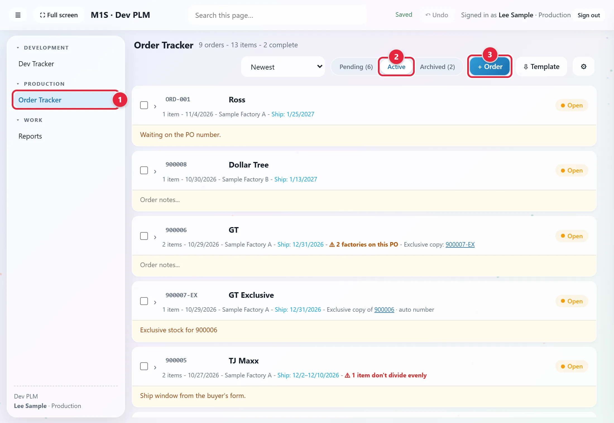
If Order Tracker isn't in the side menu, ask Saul or another admin for rights. If + Order 3 is greyed out, you only have view rights, and they can change that too. Admins: see Give access in Dev PLM.
-
Get your spreadsheet ready
Click ⇩ Template at the top right to download a blank M1S order form. Fill in one row per item, with at least Style# and Qty. Add Customer too, or type it in when you import. Reference lists every column.
Brand Image Description Style# Color UPC Master/ Inner Qty Exclusive Stock Qty Customer Ticketing Ship Date Factory Cost Status Order Cut Notes Sample Beauty Sample Rose Body Mist SMPL1001 24/6 600 Burlington No 1/25/2027 Sample Factory A 1.00 1 Sample Beauty Sample Citrus Shower Gel SMPL1003 24/6 1440 Burlington No 1/25/2027 Sample Factory A 1.00 1 Sample Beauty Sample Green Tea Toner SMPL1012 12/6 2400 240 Burlington M1S 2/1/2027 Sample Factory B 1.00 2 Drawn layout with sample data, not a screenshot. Scroll it sideways to see all 17 columns. - Ticketing: Yes, No or M1S.
- Master/ Inner: written like 24/6.
- Order Cut: one file can make several orders, one for each customer and each value here. It goes in the order's notes.
Another .xlsx, .xls or .csv file also works if it has a style column. To fill the form from the Pending list (items waiting for an order form), see Turn Pending items into an order form.
-
Click + Order
It's at the top right, marked 3 in the picture in step 2. The New Order popup opens.
-
Add your file
Drag the file onto the box 1, or click the box and pick it. + Add manually 2 is for typing an order instead. See Add an order by hand.
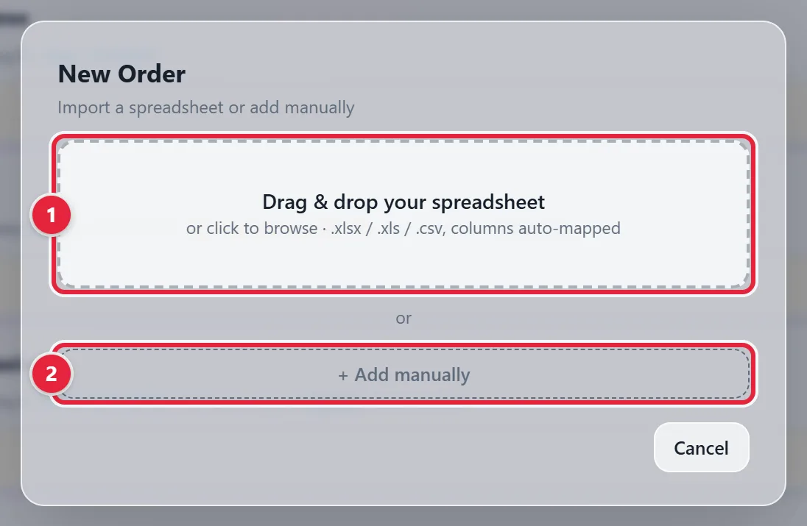
-
Check the matched columns
The Order Tracker matches your columns to its fields by itself. A green tick means it found a match. If one is wrong, pick the right column from its list.
For Customer *, the Order Tracker picks From column 1 if the file has a customer column, even an empty one. Keep it if every row has a customer. Otherwise pick Type it in, which gives every row that name. Under From column, rows with a blank Customer become a separate order, for a customer called Unknown. If the file is for several customers, fill in its blanks and start again.
Style Number * must have a match too. Then click Check 2.
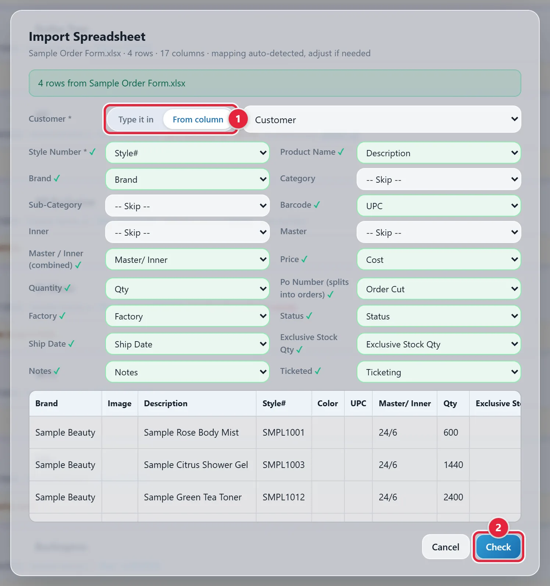
-
Read the check
Nothing is saved yet. The table shows the number the new order will get 1. PO# 1 beside it is the file's Order Cut value. It goes in the notes and doesn't become the order's number. The lines under the table tell you the starting status, any pictures found, and how many units come off the Pending list.
If you see Fix these first, you can't import yet. Click Back, or fix the file and start again.
If Customer says Unknown, some rows have a blank Customer. Click Back and pick Type it in, or fix the file and start again.
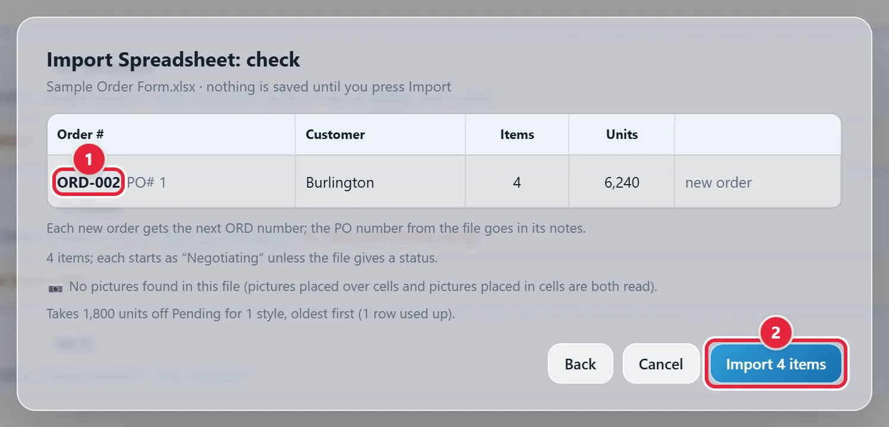
-
Click the import button
It names your item count, such as Import 4 items 2. An import can't be undone. A popup says what was done. Click Close. Your new order is open on the Active tab.
-
Type the real PO number
A new order gets a temporary number such as ORD-001 1, even if the file has a PO number. The file's PO number goes in the order's notes.
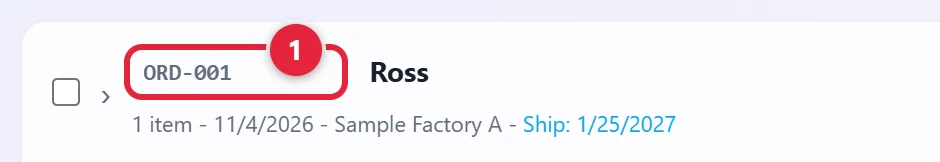
Click the number on the card and type the real PO number, then press Enter. That's our PO with the factory, the same number as PO# on the PO Status Tracker, not the customer's own PO number. If another order already uses it, the Order Tracker refuses it and names that order.
Add an order by hand
-
Click + Order, then + Add manually
The New order popup opens. Nothing is saved until you click the create button.
-
Fill in the order
Type the Customer * 1. Type the PO number 2. That's our PO with the factory, not the customer's own number. Or leave it blank for the next ORD number. Pick a Factory if all the items come from one.
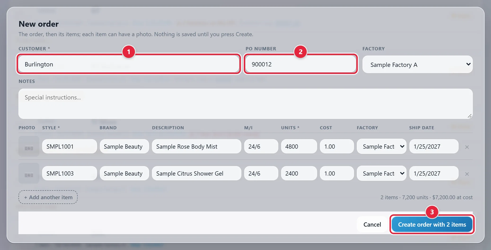
-
Fill in one row per item
Style * and Units * are required. The rest can wait. Click + Add another item for the next row. Click the photo box at the start of a row to add a picture.
-
Click the create button
It names your item count, such as Create order with 2 items 3. The order opens on the Active tab. Every item starts at the first status.
Find an order
-
Type in the search box
Use Search this page… at the top 1. It finds a PO number, customer, date or note, and an item's style, description, brand, factory, status, UPC or ship date. It doesn't search units or cost. It looks in the Active or Archived tab you're on, not in Pending.
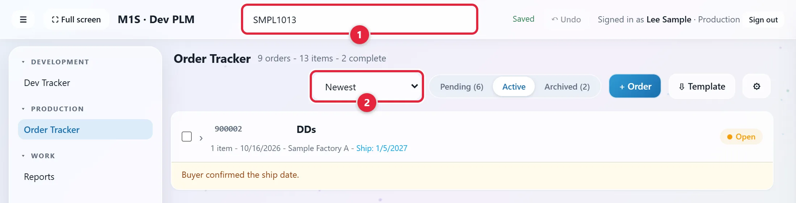
-
Sort the list if you need to
Use the Newest list 2. Orders that are still Open always come first.
-
Click the card to open it
Click an empty part of the card's top row, or the › arrow. Its items show under it. Click again to close it.
Update an order's items
Every change saves by itself. The top bar shows Saved. Do only the ones you need, in any order.
-
Pick the factory
Open the order. Use the factory list on the item's row 1.
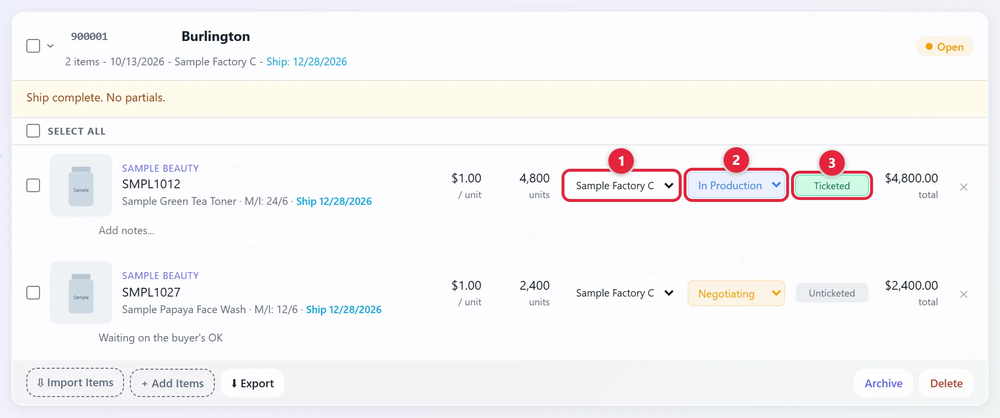
-
Pick the status
Use the colored list 2. The badge at the top right of the card stays Open until every item reaches the last status. Then it reads Complete.
-
Click Ticketed
One click 3 switches the item between Unticketed (grey) and Ticketed (green). Tickets are retail price tickets or labels.
-
Change the cost or units
Click the number on the item's row: the cost 1 or the units 2. A box opens. Type the new number and press Enter.
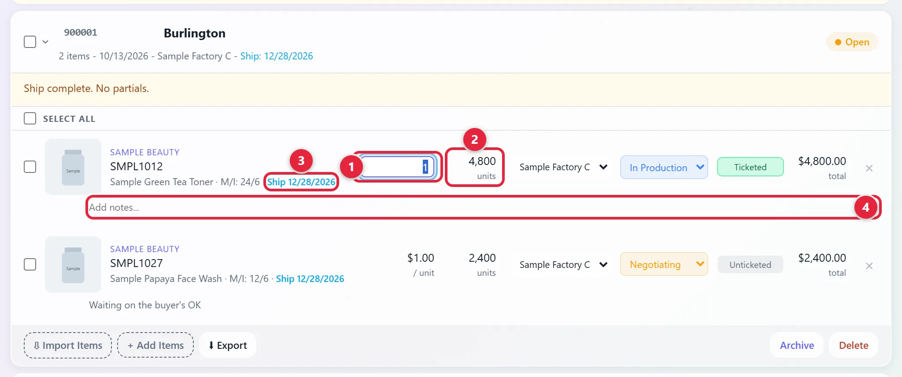
-
Change the ship date
Click Ship and the date on the item's row 3, or + ship date if it has none. Type one date or a range, such as 6/2 or 6/2-6/10, and press Enter.
-
Add notes
Type in Add notes... under an item 4, or Order notes... in the yellow band on the card.
-
Add a photo
Click the picture box on an item that has no photo, then pick a file. Click a photo to see it larger. That view has Replace photo 1.
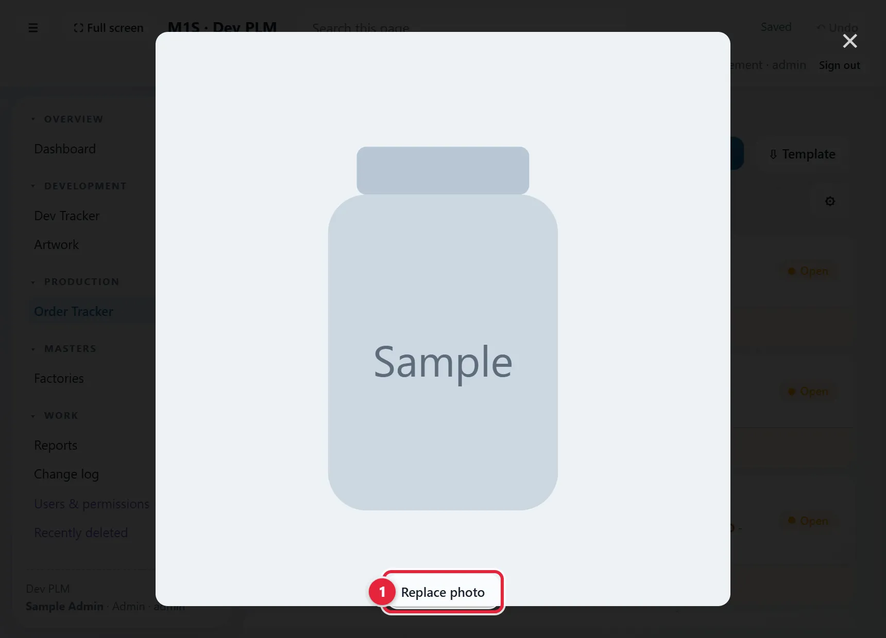
-
Change the customer
Click the name on the card and type. It saves by itself.
-
Undo a mistake
Click ↶ Undo at the top right of the window 1. It undoes your last change. Ctrl+Z does the same only when your cursor isn't in a box or list, so click an empty part of the page first.
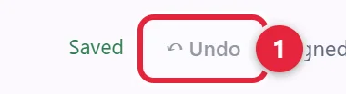
Change several items at once
-
Tick the items
Open the order first. Tick the box at the left of each item 1, or tick Select all. A dark bar appears above the orders. Don't use the box on the card. It's for exporting, archiving or deleting whole orders.
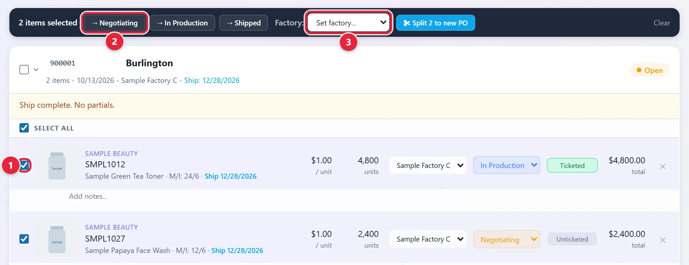
-
Set the status or factory
Click a status button 2, or pick from Set factory... 3. Every ticked item changes. Clear, at the right of the bar, unticks them.
Move items to a new PO
-
Tick the items to move
Open the order first. Tick the box at the left of each item 1, not the box on the card.
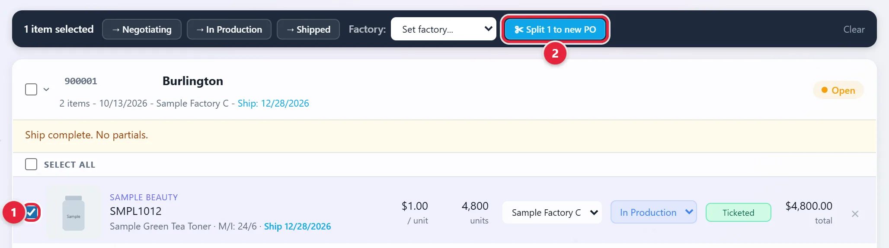
-
Click the split button
It's in the dark bar, such as ✂ Split 1 to new PO 2. The number is how many you ticked. The Split to a new PO popup opens.
-
Type the new PO number
Type it in the box 1. It's our PO with the factory, not the customer's own number. Or leave it blank for the next ORD number.
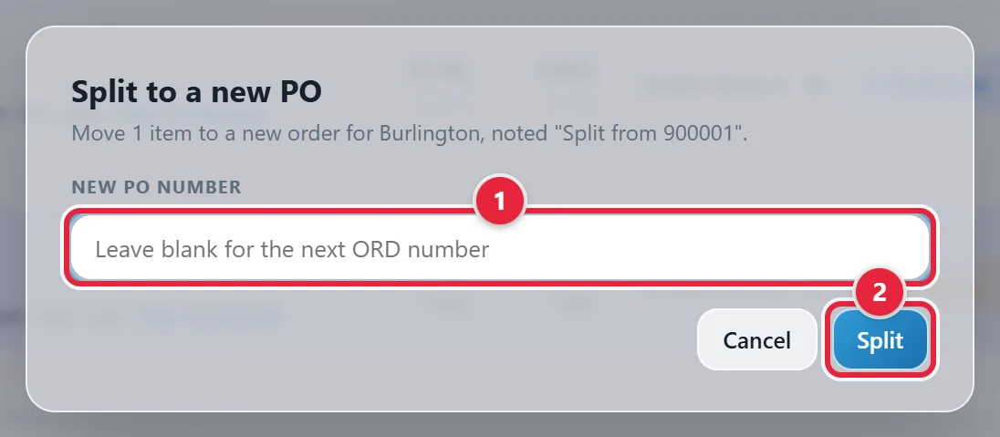
-
Click Split
Click Split 2. The items move to a new order, for the customer of the first item you ticked. Its note says Split from and the old number. The new order opens.
Add items to an order you already have
-
Click + Add Items
It's at the bottom of the open order 1. Fill in the rows as in Add an order by hand, then click the add button, such as Add 2 items.
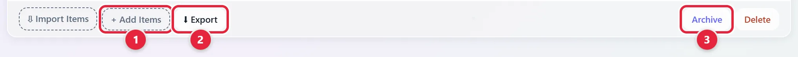
-
Or import them from a file
Click ⇩ Import Items, beside + Add Items, or drop the file on the open order. The steps match Enter a new order from a spreadsheet, but the rows join this order.
Add items to the Pending list
Pending holds items waiting for an order form. It fills only from a file you import or from the Dev Tracker. Nothing adds to it by itself.
-
Click the Pending tab
It's at the top 1. Rows are grouped by where they came from.
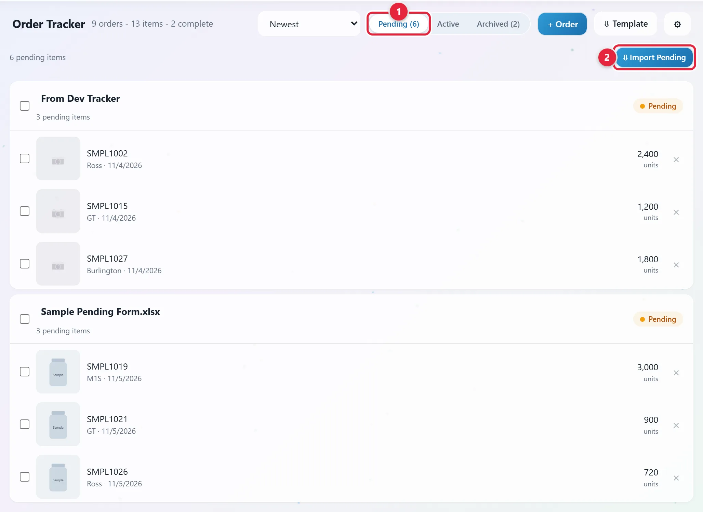
-
Click ⇩ Import Pending
It's at the right, above the list 2.
-
Add your file
Drag the file onto the box in the popup, or click the box and pick it. The Order Tracker finds the Style and Qty columns by itself, and Customer if there is one. If it can't find them, it says so. Title them Style and Qty in your file and try again.
-
Read the check
The green line says what will be added 1. Rows with no style or no quantity are skipped and listed.
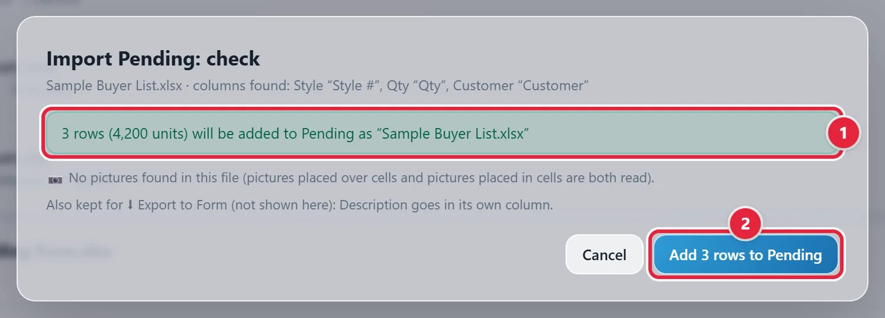
-
Click the add button
It names your row count, such as Add 3 rows to Pending 2. A popup says what was added. Click Close. The rows show on the Pending tab under the file's name.
Send items from the Dev Tracker to Pending
-
Tick the rows in the Dev Tracker
Open the Dev Tracker and stay on its main Dev Tracker tab. Tick the box at the left of each row. See Development & Sample Tracking for more on this screen.
-
Click → Order Tracker
It's in the toolbar 1. In full screen it's under More ▾. It stays grey until you tick a row. It also stays grey if you don't have Edit rights on the Order Tracker.
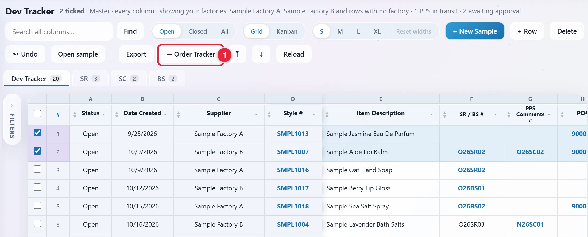
-
Type the units for each style
Type them in the boxes 1. Every style needs units above 0. Ticked rows with no Style # stay behind.
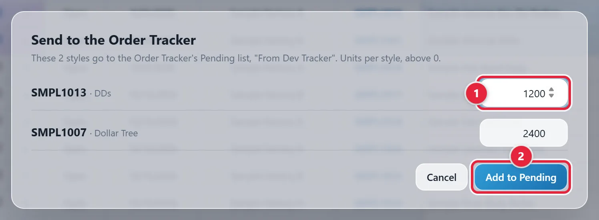
-
Click Add to Pending
Click Add to Pending 2. The rows show on the Pending tab under From Dev Tracker.
Turn Pending items into an order form
-
Tick the rows
On the Pending tab, tick the box at the left of each row 1. The box beside a group's name ticks every row in it.
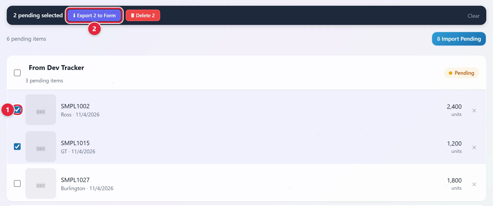
-
Click the export button
It names your count, such as ⬇ Export 2 to Form 2. The file Pending_Order_Form.xlsx downloads, with the rows, their pictures and the other columns of the imported file. If something couldn't go in, such as a picture or a brand, a popup says so. Click Close.
-
Check the form
Style#, Qty and Customer come from the Pending row. Rows with no value of their own get the first status, Ticketing No and Order Cut 1. Change them in the file if you need to.
Customer can be blank here, for example from a file with no Customer column, or a Dev Tracker style whose rows have different customers. Fill it in, or pick Type it in when you import.
Factory, Cost and Ship Date stay blank unless the row's file had them. You can fill them in before you import, or set them on the card after.
-
Import the form with + Order
Follow Enter a new order from a spreadsheet, from the + Order step. Importing takes the units off Pending, by style, oldest row first. A row at 0 units goes away.
Finish an order
-
Send the order form
The team's routine is to create the order, send the order form, then archive the order. The Order Tracker doesn't send anything, so you send the form yourself.
Send the M1S order form you imported: the ⇩ Template file you filled in, or Pending_Order_Form.xlsx. ⬇ Export makes a different file, not the form. Saul to confirm who gets it. See the yellow Draft note at the top.
-
Export the order if you need a file
Click ⬇ Export at the bottom of the open order, marked 2 in the picture under Add items. The file name has the PO number and the customer. Reference lists its columns.
-
Click Archive
Click Archive at the bottom of the open order, marked 3 in the same picture. The order moves from Active to Archived. There it shows no factory list, status list or Ticketed button.
-
Bring an order back if you need it
Click the Archived tab 1, open the order and click Restore 2. Restore it when you need to change its factory, status or tickets.
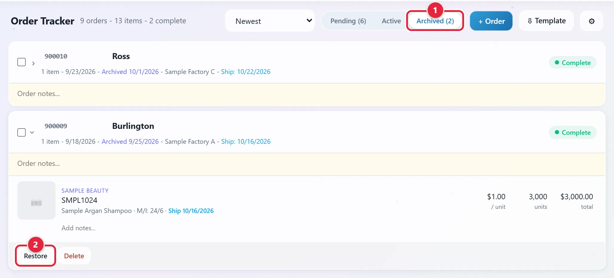
Change the lists under ⚙
Click ⚙ at the top right of the Order Tracker. Adding to a list and importing categories need Edit on the Order Tracker. Anyone who can open the Order Tracker can read the Event Log. Do the one you need.
Add a status or a factory
-
Click the Statuses or Factories tab
The tabs are at the top of the Settings popup.
-
Type the new name and click Add
Type in New status or New factory 1, then click Add 2. A new status goes just before the last one, so the last still means complete. To rename one, type over its name.

This list is only for the Order Tracker. For the other factory lists, see Add a factory or change its email.
Update categories from a file
This writes Category, Sub-Category and Brand into the style list, which other tools read too.
-
Click + Import Categories
It's on the Categories tab 1. Pick your file. It needs a column for the UPC or the style, and for any of the three fields.
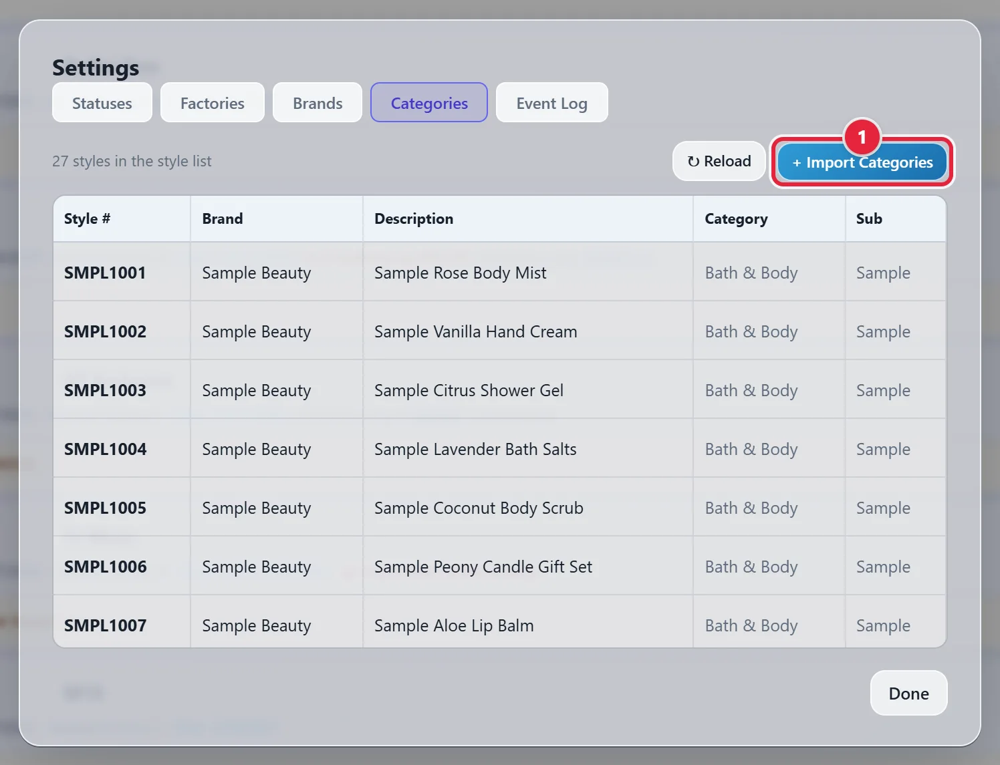
-
Read the check
Nothing is written yet. The table shows each field, what it says Now and what it Becomes.
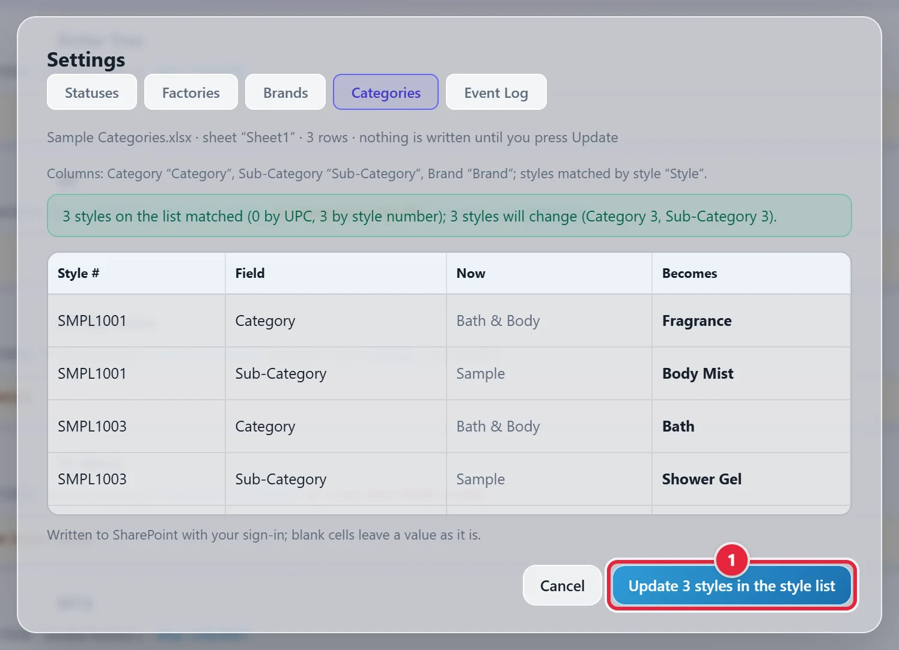
-
Click the update button
It names how many styles will change, such as Update 3 styles 1. Click Cancel to stop.
See who changed what
-
Click the Event Log tab
It lists when, who, the record and the field, with the old and new values. Scroll the table sideways to see New.
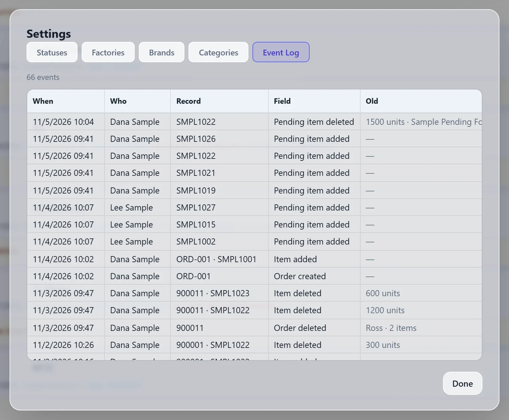
Next in the Sales flow
- Customer compliance and routing, before shipment: Compliance & Routing.
- Samples and approvals: Development & Sample Tracking.
- The PO, from mass production to ready to ship: Production & PO Tracking.
- Following open orders to delivery: Order Tracking.
On the Dev Tracker, a PO# that matches an order, exactly or on its first six digits, becomes a link to it. Only people who can see the Order Tracker get the link. ORD and -R numbers never link.
Rules to remember
- Each order needs its own PO number. A number can be used once. Adding -EX, the mark of an Exclusive copy (see Order numbers under Reference), doesn't make it a new number. Capital letters make no difference.
- An import can't be undone, so read the check first. An order imported by mistake can be deleted, but the units it took off Pending don't come back. Rows it used up aren't in Recently deleted, so add them again with ⇩ Import Pending or → Order Tracker.
- Importing takes units off Pending by style, whatever the customer. An order typed by hand takes nothing off Pending.
- Pending rows never merge. Sending a style twice makes two rows.
- An order reads Complete only when every item is at the last status.
- Split and Delete ask first, and ↶ Undo doesn't cover them. The delete popup says it can't be undone, but an admin can bring the order back from Recently deleted for 90 days. See Bring back something deleted.
- If the top bar shows Save failed — retry, click it. Your change isn't saved until the top bar says Saved.
Reference
Item statuses
The Order Tracker has 3 item statuses, kept under ⚙ at the top right. The names in these pictures are samples, so check your own list there.
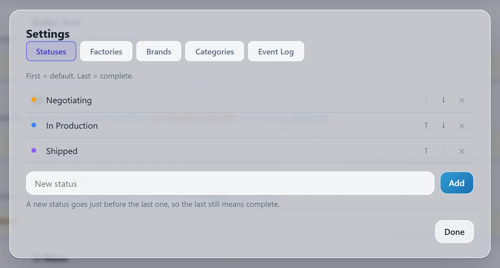
| Part | What it means |
|---|---|
| First status | Every new item starts here, unless its file gives a status |
| Last status | Means complete. A new status goes just before it. |
| Open badge | The order has an item not yet at the last status, or has no items |
| Complete badge | Every item on the order is at the last status |
| Rename a status | Items using the old name follow it |
| Remove a status | It asks first. Items keep the old value until someone changes them. |
Warnings and links on an order card
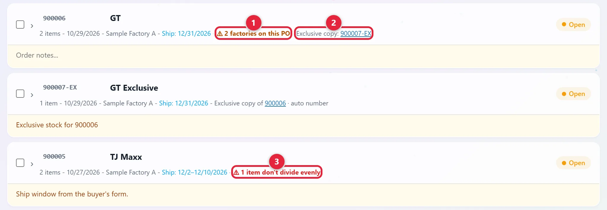
| On the card | What it means |
|---|---|
| 1 ⚠ 2 factories on this PO | Items on this order have different factories |
| 2 Exclusive copy | This order has an Exclusive copy, or is one. Click the number to open the other. |
| 3 ⚠ 1 item don't divide evenly | An item's units don't fill whole cases. Its units show in red. |
| ⚠ on a ship date | The text couldn't be read as a date. It's kept as typed. |
Order numbers
| Looks like | What it is |
|---|---|
| ORD-001 | The next number from the Order Tracker, when no PO number was typed. ⬇ Export leaves Po Number blank for it. |
| 900020-R | A placeholder number, waiting for its real PO number. |
| 900007-EX | An Exclusive copy. It has its own number and links to its order. |
| auto number | Shown on a copy when Dev PLM gave the number. It isn't matched to a PO until you type the real number. |
Exclusive Stock Qty
A row with a number in Exclusive Stock Qty also makes a copy of that item on a second order, for the customer name plus "Exclusive". The copy's units come on top: 1,200 with Exclusive 240 makes 1,200 + 240. The check screen shows the copy's number. Type its real PO number there if it has one.
Columns the import can match
Fields: Style Number (required), Product Name, Brand, Category, Sub-Category, Barcode, Inner, Master, Master / Inner (combined), Price, Quantity, Po Number (splits into orders), Factory, Status, Ship Date, Exclusive Stock Qty, Notes, Ticketed.
The M1S order form has: Brand, Image, Description, Style#, Color, UPC, Master/ Inner, Qty, Exclusive Stock Qty, Customer, Ticketing, Ship Date, Factory, Cost, Status, Order Cut, Notes.
Po Number (splits into orders): one file can make several orders, one for each customer and value in this column. On the M1S form, this is the Order Cut column.
Master/ Inner (M/I on the screen): the first number is the case pack, the number of units in a master carton. Units that don't fill whole cases get a warning.
Pictures in the file come in too, whether they sit over the cells or in them. An import takes up to 5,000 rows.
Notes on the check screen
| The note | What the import does |
|---|---|
| No style | Imports it as "Unnamed" |
| Units aren't a usable number | Imports it as 0 |
| Exclusive Stock Qty isn't a usable number | Makes no Exclusive copy |
| Cost isn't a number | Leaves it empty |
| UPC isn't 12–13 digits | Leaves it empty |
| Ship date couldn't be read | Keeps it as typed and flags it |
| Status isn't in the list | Keeps it as typed |
| Factory isn't in the list | Keeps it as typed |
| Ticketed isn't Yes, No or M1S | Keeps it as typed |
What ⬇ Export gives you
Columns: Category, Sub, Brand, Product name, Style Number, UPC, Inner, Master, Price, Quantity, Po Number, Factory.
Category, Sub, Brand, UPC and Product name come from the style list, or from the item if the style list has none. If the style list can't be read, a popup asks before it exports without it. To export several orders, tick the boxes on their cards and click the export button in the dark bar, such as ⬇ Export 2 Orders.
⚙ Settings tabs
Steps are under Change the lists under ⚙.
| Tab | What it holds |
|---|---|
| Statuses | The item status list |
| Factories | The factory list for this tracker |
| Brands | The brand each style prefix stands for. Only admins can change it. |
| Categories | The styles on the style list, and + Import Categories |
| Event Log | Who changed what, with old and new values |
Delete an item or an order
An item: click the × at the right of its row. An order: click Delete at the bottom of the open order. Several orders: tick the boxes on their cards and click the delete button in the dark bar, such as 🗑 Delete 2. That one asks twice. A Pending row has its own ×.
To bring one back, see Bring back something deleted.
The sort list
Newest, Oldest, Customer A-Z, Customer Z-A, By Status, Most Items, By Factory.
Who can edit
The Production and Logistics roles get Order Tracker Edit by default. The Design and Inspection roles get no access by default, so it isn't in their menu. An admin can give rights to others, one person at a time, in Users & permissions. See Give access in Dev PLM. View-only people can look, search and export.